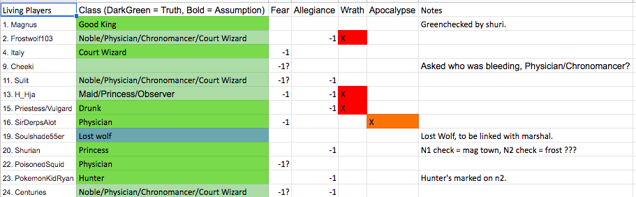

Blizer is literally a scum Priest @eevee
We mechanically knew soulshade had to be LW.
We know all the secrets.
Eevee
we knew everything
collectively
we became the overmind
Petition to go back to mislynching Jake every game because meta-clearing him clearly isn’t working 
1 Like
Marshall is…
The Templar

Syndicate Killer
Eternal Crusade (Passive) - If you die, you will grant an additional effect to every other Syndicate Member’s Omega action.
In Nomine Dei (Passive) - If you perform the factional kill then you will always bypass night immunity, healing, jailing, the Hunter’s Bear Companion, and the Knight’s Defend. You may also use both Purge the Sinners and Faith and Steel in the same day.
Purge the Sinners (Day) - You will be able to both bleed and fake bleed a player for the day. The real bleed will inform a player that they were bled and they will die in two nights. The fake bleed will only inform the player that they were bled and do nothing else. - 3 use
Faith and Steel (Day) - During daytime you will kill yourself alongside a selected player in broad daylight. You cannot use this in the last 6 hours of the day. - One use
Divine Retribution (Night) - In each even night, kill a player as long as they have voted you at least once by the end of the last day. This ability does not stack with In Nomine Dei. - Infinite uses
Massacre (Night) - While performing a factional kill you will also rampage and kill everyone visiting your target tonight. This effect does not stack with In Nomine Dei and the rampage kills will not bypass healing or any form of protection at all. - One use
Dies Irae (Ω) - In each day, the Syndicate can place a Mark of Wrath on a player of their choice or commence the Day of Judgment. The Day of Judgment will be publicly announced in the thread and kill all players that had the Mark of Wrath, bypassing all forms of protection. Additionally, if a player with the Mark of Wrath gets lynched then they will have a one-shot Vengeful shot overnight that will only kill their target if they are not aligned with the Syndicate.
Your objective is to defeat the Blue Dragon.
Ozzkozz is…
The Confessor
Syndicate Investigative
Syndicate’s Watchmen (Passive) - At the end of the night you will know which classes visited you overnight, but not who they are nor how many of each visited you.
Contrition (Passive) - If you perform the factional kill then your visit to the kill will not show to Observers.
Omniscience (Day) - Select another member of the Syndicate. If anyone uses a day action on them then you will know who used it and what was it at the start of the night. - 3 uses
Eyes of the Syndicate (Day) - At the end of the night you will learn of every player to have visited a member of the Syndicate overnight. - 2 uses
Confession (Night) - Your target’s class will be revealed to you. - Infinite uses
Watchful Vigil (Night) - You will learn who your target visits and whoever visits them for this night. - 3 uses
Omnisapience (Ω) - If a Blue Dragon player has claimed their real class or even softed it then the Syndicate will place a Mark of Truth on them. This action can be used infinite times per day. The Mark of Truth will reveal to the Syndicate their true class while at the same time informing the Syndicate of who they visit and who visits them at the end of every night, alongside with the outcome of their night action.Eternal Crusade Bonus: Once per day you may use a day vigilante action on a player with a Mark of Truth.
Your objective is to defeat the Blue Dragon.
Solic is…
The Harbinger
Syndicate Support
Omen of Remorse (Passive) - Any player that visits you will be permanently framed for the remainder of the game, and they will show as a member of the Syndicate to faction checks. This also marks them with a Mark of the Apocalypse.
Omen of Deceit (Passive) - You will be seen as a member of the Blue Dragon to faction checks and you will be immune to bleeding.
Dominance of Pestilence (Day) - Any player attempting to occupy or kill you tonight will be prevented and they will be bleed overnight and be marked with the Mark of the Apocalypse. - 2 uses
Circle of War (Day) - Prevents a player from both being visited and visiting, while also marking them with the Mark of the Apocalypse. If used on the Prince or on a target that they try to jail then the jail will fail. - 2 uses
Grasp of Famine (Night) - Your target will be healed and they will not be able to be occupied or redirected tonight, additionally any player that visits them will be marked with the Mark of the Apocalypse. - Infinite uses
Banner of Death (Night) - Marks a player for death alongside marking them with the Mark of the Apocalypse. Upon being marked then any time that a kill targets them it be sure to succeed. - One use
Call of the Apocalypse (Ω) - Upon marking every living Blue Dragon player with a Mark of the Apocalypse, you can call the Apocalypse, which will only end when you die. While the Apocalypse is happening all members of the Syndicate will gain night immunity, have their factional ignore healing and night immunity, and investigative actions from Blue Dragon-aligned players will always fail.Eternal Crusade Bonus: Once the Apocalypse begins, you can choose to use a day vigilante shot on a player of your choice.
Your objective is to defeat the Blue Dragon.
Jakethewolfie is…
The Zealot
Syndicate Offensive
Fanatic Zeal (Passive) - You cannot be occupied or redirected. If any player tried to occupy or redirect you, you will know. If you manage to redirect a player onto killing another then you will be informed of it and gain a stack of Zeal. Zeal stacks can be used to lower a player’s Fear counter by 4, or they can be used as a second roleblock for the night.
Overwhelming Aura (Passive) - At the end of each night you will obtain a list of players who were occupied, roleblocked, or prevented from using their night actions.
Force of Conviction (Day) - Redirects a player’s incoming day action to another. If no second target is chosen then this just occupies them. This does not consumes any charges if the target’s Fear Counter is at 2 or above. - 3 uses.
Mirror of Faith (Day) - Any day action targeting your target will cause the day action to be reflected back onto its user. - 3 uses.
Might of Conviction (Night) - Redirects a player’s night action to another. If no second target is chosen then this just occupies them. - Infinite uses.
Works of Zeal (Night) - Bus drives two players, causing any action that targets one to target another and vice-versa. This bypasses redirection immunity. - 2 uses.
Submission (Ω) - Each Blue Dragon player will have a Fear Counter that starts at 0. For every night where they are redirected or occupied their counter will lower by two, for every night where they successfully perform an action on their intended target it will be raised by one. If their counter is in the negative then they will gain a debuff depending on the counter.
- Negative 3: The player who they visit will be revealed to the Syndicate.
- Negative 5: They cannot be visited by players who are outside the Syndicate.
Eternal Crusade Bonus: If a player hits a Fear Counter of Negative 7, they will die overnight.
Your objective is to defeat the Blue Dragon.
Geyde is…
The Archon
Syndicate Social
Influence and Affluence (Passive) - Votes for King towards you will count three times the amount of normal votes. Additionally, while you are alive if at the EoD a tie happens then the rand will always prioritize players that are not members of the Syndicate.
Grand Archbishop (Passive) - You will be able to speak to the dead at night and while alive all dead Syndicate members can still speak in Syndicate chat. While alive the Priest cannot communicate with the dead nor use Channel, and you will know if a Priest or Mystic rolled or not. Additionally, you can use both Mental Restructuring and Rapture in the same day.
Mental Restructuring (Day) - You can either cause a player to believe that they were jailed by the Prince while also sending them a message, or link two players and give them a neighborhood which you will have access at the end of the night. - Infinite uses
Rapture (Day) - The class and logs of the target player will be cleaned when they die. If a player dies and is cleaned, their class and logs will however show in the Syndicate chat. Upon dying any flip that was cleaned from Rapture will be revealed. - One use
Scales of the Syndicate (Night) - Select two players, and for the next day one of them will have an invisible vote counting for their execution while another one will have a negative vote counting against their execution. This will not take effect- Infinite uses
Pearly Gates (Night) - In addition to your own Omega Action, you may also use a dead Syndicate member’s Omega Action alongside yours for the coming cycle if the conditions are fulfilled. - One use
Allegiance (Ω) - Each Blue Dragon player will have an Allegiance Counter that starts at 0. For every day where their vote ends on another member of the Blue Dragon their counter will lower by one, for every day where their vote ends on a member of the Syndicate their counter will increase by one. If their counter is in the negative then they will gain a debuff depending on the counter.
- Negative 1: Their class type grouping will be revealed to the Syndicate.
- Negative 2: Their votes for King elections will not count, but they can still become the King.
- Negative 3: They will have one silent vote on them. Stacks with Scales of the Syndicate.
- Negative 4: They will be roleblocked for the night.
Eternal Crusade Bonus: If a player hits an Allegiance Counter of Negative 5, they will die overnight.
Your objective is to defeat the Blue Dragon.
3 Likes
Oh my god. Those classcards are so long.
1 Like
The Elder
Syndicate Special
Alpha and Omega (Passive) - You do not join the Syndicate Chat nor do the other Syndicate members know who you are, but they know that a lost Syndicate member exists and you know who all the Syndicate members are.
Immaculate (Passive) - All day and night actions fail on you, even if a player has been empowered or if a kill is strongman. If a member of the Syndicate tries to attack you, you will then be notified and gain an usage of Righteous Wrath.
Righteous Wrath (Day) - You will kill a player in broad daylight. If you are the only member of the Syndicate alive, then this action will cost no charges. - 0 uses.
Reshape Reality (Night) - Each night you may use a different Reshape action. Each action can only be used once per match.
The Fool - In the next day there will have an additional lynch if a member of the Blue Dragon is mislynched, however for the coming night all results will return green checks regardless of the checked player’s alignment and the Syndicate’s factional kill will not be seen by Observers.
The Magician - All day and night actions in the coming cycle will bypass occupation and redirection, and even the jailed player will be told that they can perform an action that will bypass the jailing’s occupation.
The High Priestess - At the start of the next day, it will be publicly announced who was visited by the Justiciar and what result the Justiciar obtained, and the main Syndicate chat will have three random players who are not the Justiciar revealed to them.
The Empress - For the coming cycle all actions, as in both day actions and night actions will not consume a use of their charges. This is only informed to the main members of the Syndicate.
The Emperor - For the coming day, rather than twice the King’s vote will count for four times the amount of an average vote. However in the middle of the day they will be bled if they are a member of the Blue Dragon, and fake bled if they are a member of the Syndicate.
The Hierophant - Tomorrow night all players will be redirected to their targets this night, and if their previous target is currently dead then they will be just occupied. This bypasses redirection immunity.
The Lovers - Tomorrow the first two players that cross-vote who are both members of the Blue Dragon faction be loverized and gain a neighbourhood chat.
The Chariot - All kills in the night after this one will be empowered and cannot be occupied, however if a member of the Blue Dragon kills another one then there will not be any penalty for them.
Strength - All strongman kills will be turned into normal kills for tonight, while all normal kills will turn into strongman kills.
The Hermit - In the night after this one all investigative classes will be occupied bypassing everything. However all investigative classes will have night immunity for tonight and will be healed from bleeding, if they are under this condition.
Wheel of Fortune - Randomly uses a Reshape Reality action without costing a use of it. In addition, the new Reshape Reality will not be announced in the main thread but you will know what was randed.
Justice - All main members of the Syndicate will secretly have a double vote for the next day. However all investigative results for the coming night will be perfectly accurate and cannot be tampered.
The Hanged Man - The player that is lynched tomorrow will gain a one-shot vengeful attack to use on one of the voters on their wagon overnight while at the same time having one shot heal to use on a voter off their wagon overnight.
Death - At the start of the day, the current King will return to their original class and another player will randomly be chosen to be the new King. The new King can be a member of any faction.
Temperance - Tomorrow all day actions will fail and will still consume a charge if there is an attempt to use them. However members of the Syndicate are warned of this effect beforehand.
The Devil - All day and night actions in the coming cycle will be redirected back to their user without bypassing occupation immunity, however Killer-type classes and Syndicate members performing the factional kill will gain night immunity.
The Tower - Tomorrow the King will die at the end of the day. Additionally by the end of the day you will have two guesses on the identity of the Prince. If you choose to answer and either of the guesses is the Prince, then they will die. If you choose to answer and neither of the guesses is the Prince, then you will die.
The Star - Any dead members of the Syndicate will be able to use their Omega Actions for the coming cycle, however if the King is a member of the Blue Dragon then they will also be able to jail and execute a player for the coming night.
The Moon - Three random players will be fake bled across the day while in the next night three other random members of the Blue Dragon will be seen as members of the Syndicate to faction checks.
The Sun - Tomorrow you will not be able to voted for an execution. However if a Syndicate member is up to a rand in a tie then it will always rand to them over a member of the Blue Dragon.
Judgment - All the dead players tomorrow will be able to talk in the thread tomorrow during the day, but all dead members of the Syndicate will be able to use their night actions as well in the coming night.
The World - If tomorrow the Syndicate is one mislynch away from achieving parity than they will instantly win the match.
New World Order (Ω) - Each time a member of the Syndicate dies you can choose to re-use an action from Reshape Reality.
Your objective is to defeat the Blue Dragon.
3 Likes

we had this spreadsheet.
anyone with a fear or alleigince mark had to be BD.
soulshade was the only non truth-marked non-alleignenced marked non fear-marked player.
foolish
SEE NOW THE POWER OF THE ELDER
Main takeaways.
A) Stop talking about mechanics in a closed setup. You have no idea what the wolves are capable of, so stop clearing people over it, trying to confirm yourself using it, or scumhunting by claims.
B) Stop mass-claiming. Seriously, there was no reason for you all to claim d1 but by the time Hja got crowned Ozz had already six of out nineteen BD marked with his anti-claim Omega Action.
C) Use your night actions like you’re dying that night. Frost was alive for all three nights and he didn’t bounty anyone and these two additional lynches could have saved the match. Neither of the 2 CWs use IW, and the Princesses spent more time flirting than performing alignment checks.
D) Stop assuming flips in cleans. Seriously, watching everyone clear Marshall/Jake/Ozz over Kyo’s flip was just making me want to scream.
E) Stop scumreading people just for what you think is pocketing. Seriously, Arete was forced to out mainly for everyone scumreading him for TMI’ing Luxy as town while I posted that the Justiciar had a passive to know who the Prince was.
F) Stop using AtE and play the game. Watching Kyo and Wazza was just depressing. If you’re BD, fight to the bitter end instead of self-voting like that.
4 Likes
Well, it was a Dreaming God
So it didn’t know what it would do
So what would happen if I replaced in and claimed it?
If I outed information?
Or hell, even guessed all scum correctly?
You wouldn’t even consider your information might be wrong cause you are so much on a roll?
Like it was perfect moment for LW to out, but they didn’t.
And this game shouldn’t be called till they do it and noone ccs. Really.
They could lynch without LW
Calling it was correct move
2 Likes
Telling us about how to play the game when evils had 3 KPN power.
Two Words
Fucking Read
The wolves mechanically knew who every BD was and PoE’d Soul with that. They’d have to gamethrow to believe a LW claim from a BD player.
One More
ISO
I’d like to take credit for guessing exactly what was going on d2
You guys had a Prince, a Hunter, and an Archer. The Prince was obvious and go outed d1, and both the Hunter and the Archer only targetted BD. The extra KP was done to compensate for the lack of NKs here.
2 Likes